10 部片单 · 恐怖 / 科幻 / 惊悚 / 悬疑 / 剧情
| # | 片名 | 类型 | 评分 / 状态 |
|---|---|---|---|
| 01 | 噬血芭蕾 | 恐怖 / 惊悚 / 喜剧 | 83% / 62 / 6.6 |
| 02 | 怪奇收割 | 恐怖 / 伪纪录 / 悬疑 | 92% / 63% / 66 |
| 03 | 危笑2 | 恐怖 / 惊悚 / 心理 | 86% / 67 / 6.7 |
| 04 | 寂静之地：入侵日 | 科幻 / 恐怖 / 剧情 | 87% / 68 / 6.3 |
| 05 | 非礼勿言 | 惊悚 / 悬疑 / 剧情 | 83% / 65 / 6.8 |
| 06 | 凶兆前传 | 恐怖 / 悬疑 / 宗教惊悚 | 83% / 65 / 6.5 |
| 07 | 血爱成河 | 惊悚 / 犯罪 / 剧情 | 94% / 77 / 6.7 |
| 08 | 黑袋行动 | 惊悚 / 悬疑 / 谍战 | 96% / 85 / B |
| 09 | 怪猴 | 恐怖 / 喜剧 / 惊悚 | 78% / 57% / 62 |
| 10 | 冲浪惊魂 | 惊悚 / 心理 / 剧情 | 84% / 46% / 67 |
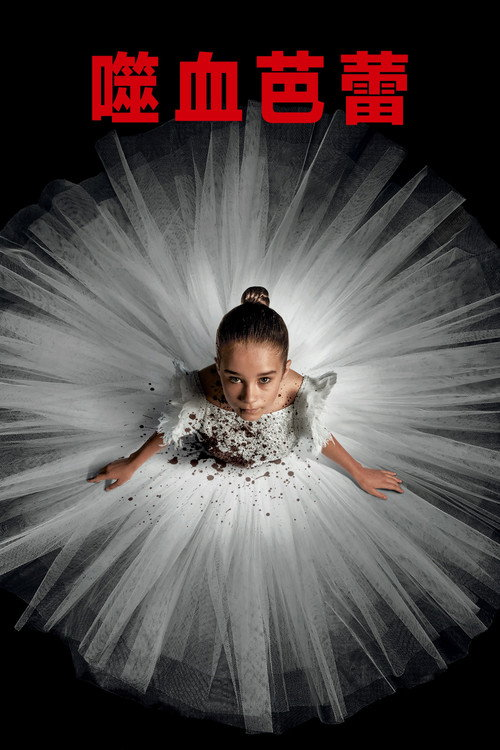
噬血芭蕾 Abigail
你以为你在看绑架片。看到第二十分钟就知道了，你不是。
剧情梗概
六个人各怀鬼胎地接下一桩活：绑走一位权势人物的女儿阿比盖尔，关进郊外的老宅，等一晚就能分到五千万。任务简单得不像话——宅子里有监控死角，女孩看起来十二岁，乖得让人心软。守夜的人一个接一个失踪，等剩下的人终于打开地下室的门，才发现他们弄错了一件事：被关起来的不是她，是他们。
亮点
- 由执导组合 Radio Silence（马特·贝蒂内利-奥尔平 + 泰勒·吉勒特）联合执导，二人此前拍过《惊声尖叫5》《惊声尖叫6》《砍人快乐》；温子仁的 Atomic Monster 参与制片。
- 阿丽莎·威尔（凭《玛蒂尔达：音乐剧》成名）饰阿比盖尔；同组演员包括梅丽莎·巴雷拉、丹·史蒂文斯、凯瑟琳·纽顿、凯文·杜兰、吉安卡洛·埃斯波西托。
- 已故演员安格斯·克劳德（剧《亢奋》中的 Fez）的遗作之一，影片于 2023 年 7 月他去世后完成后期。
- 片名与设定脱胎于环球 1936 年的《德古拉的女儿》，但剧本把整个故事搬进了一栋房子里。
- 变身后的阿比盖尔以实体假体、木偶与钢丝完成，剧组尽可能不在关键镜头上使用 CG。
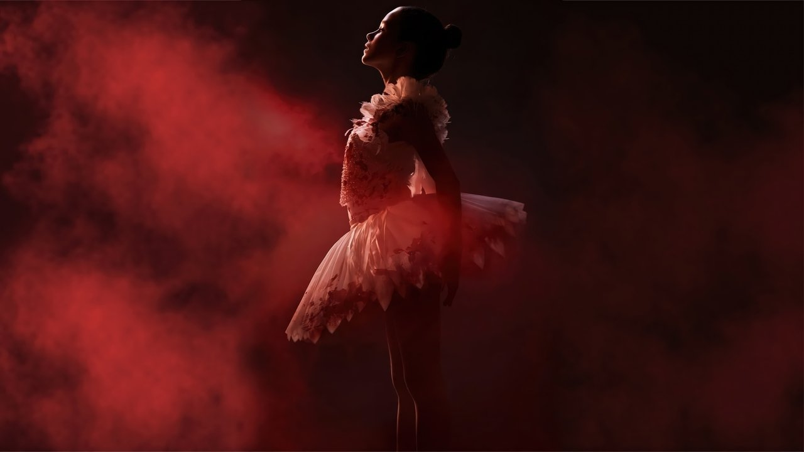
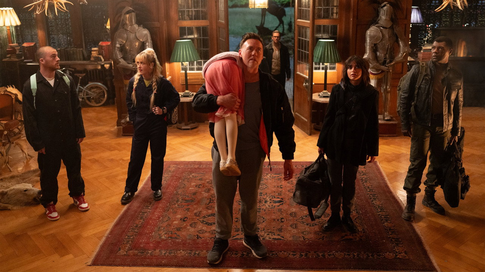
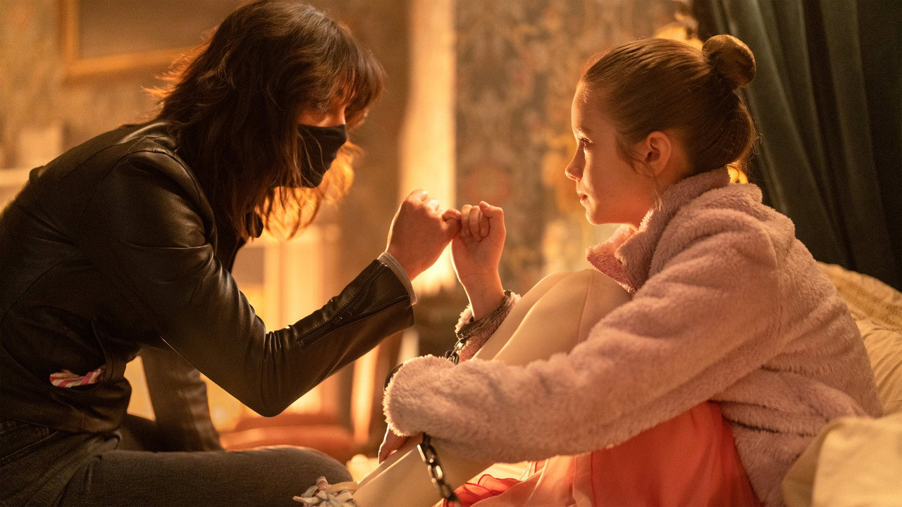
导演与主创 · 他们的历史作品

 准备好了没
准备好了没 惊声尖叫5
惊声尖叫5 惊声尖叫6
惊声尖叫6 致命录像带
致命录像带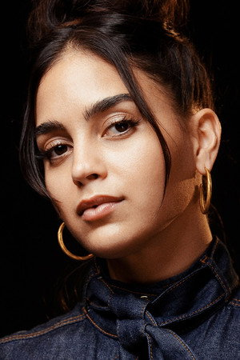
惊声尖叫5惊声尖叫6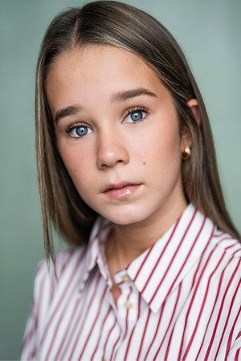
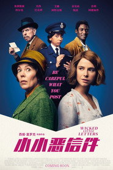
小小恶信件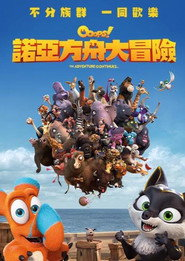
诺亚方舟漂流记2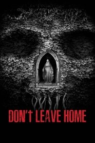
切勿离家短评（轻微剧透）
它最聪明的地方是结构：前四十分钟是一部正经的犯罪片，人物、分赃比例、互相猜忌都交代得很利落，你会以为这是部《落水狗》式的密闭群戏。然后地下室那场戏一开，类型整个翻转，前半段所有看似多余的铺垫——那个心软的姑娘、那扇打不开的门、那句「她只是个小孩」——全部变成了伏笔。这种「把反转当结构而不是当噱头」的做法，比大多数恐怖片高级。阿丽莎·威尔是真正的胜负手，她必须在同一个角色里完成两次表演切换，而且两次都要让人信，她做到了。缺点也必须说：翻转之后影片就只剩「一个接一个死」，中段有重复感；Metacritic 62、IMDb 6.6 说明它在影评人那里只是「过得去」。另外我已经剧透了那个转折——但说实话，这个转折就是它全部的卖点，片方自己也没打算藏。
为什么值得一看
想看一部不装深沉的血浆恐怖片的人；Radio Silence /《惊声尖叫》系列的影迷；喜欢《林中小屋》《准备好了没》那种「类型翻转」玩法的观众。R 级，断肢与喷浆量大，吃饭时别看。内地未引进，Prime Video / Peacock 可看。
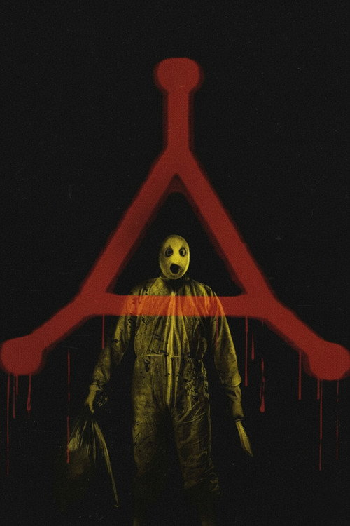
怪奇收割 Strange Harvest
它长得和你在流媒体上随手点开的真实犯罪纪录片，一模一样。
剧情梗概
加州内陆帝国。二十年前，连环杀手「闪亮先生」被击毙，案子结了。如今同样的符号、同样的仪式又出现在新的凶案现场，连作案细节都对得上。两名警探重新翻出卷宗，影片以「真实犯罪纪录片」的方式呈现：新闻片段、街头采访、监控录像、执法记录仪、Zoom 连线学者——直到这些材料开始出现不该出现的东西。
亮点
- 斯图尔特·奥尔蒂斯（《墓地邂逅》系列的作者）自编自导自剪，2024 年在美国奇幻电影节首映时片名为《Strange Harvest: Occult Murder in the Inland Empire》。
- 创意起点是《老虎之王》——奥尔蒂斯认为它本质上也是一桩真实犯罪故事，于是决定用纪录片的语法拍一个虚构案件。
- 洛夫克拉夫特、《真探》第一季、《沉默的羔羊》与黄道十二宫杀手都被他列为参考；凶手代号「Mr. Shiny」出自洛夫克拉夫特。
- Dread Central 称它「或许是自《湖边小屋》(Lake Mungo) 以来最好的伪纪录片」；《卫报》给出 4/5。
- 北美仅 770 家影院上映、票房 39 万美元，2025 年 12 月上线 Hulu 后反而冲进平台电影榜前三，成为年度最典型的「迟到的邪典片」。
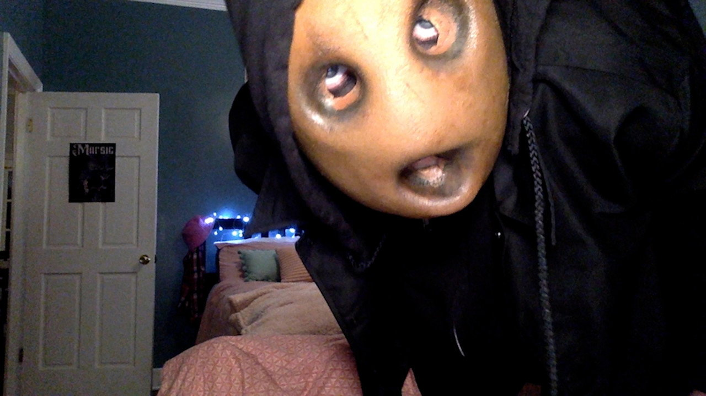
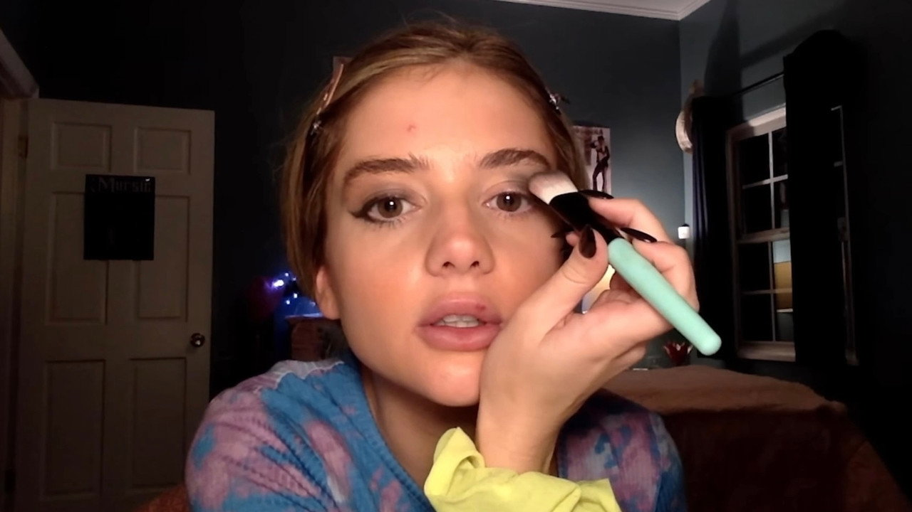
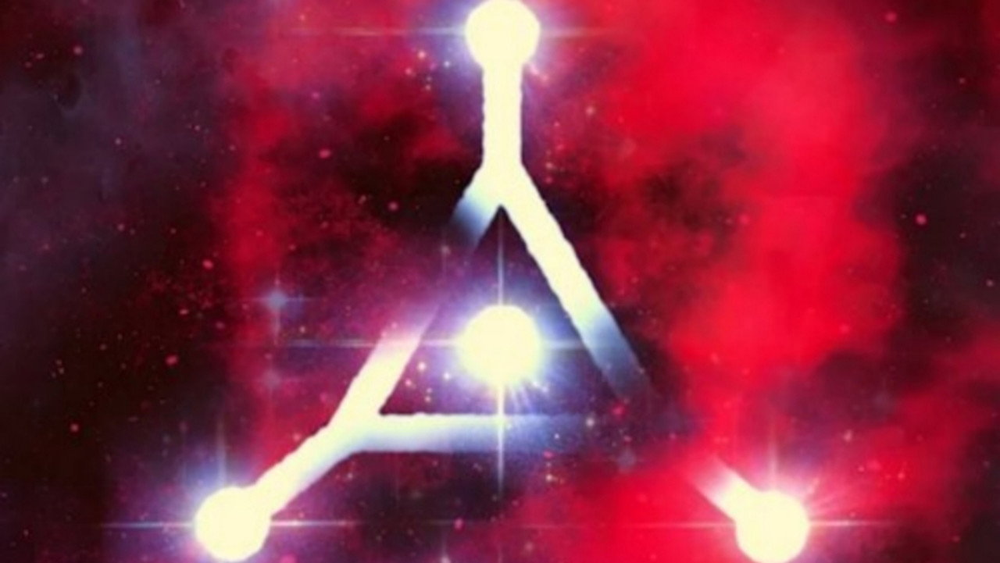
导演与主创 · 他们的历史作品
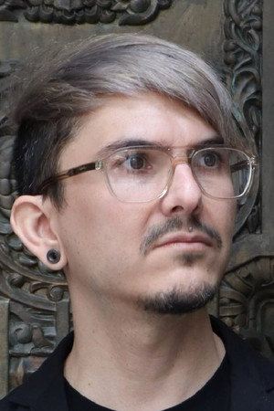
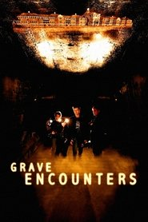
墓地邂逅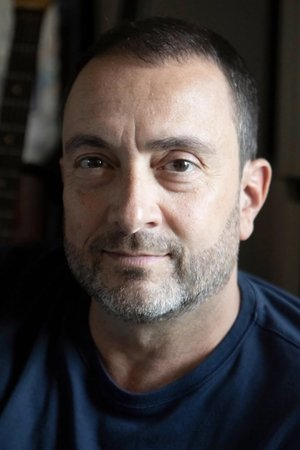
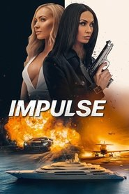
Impulse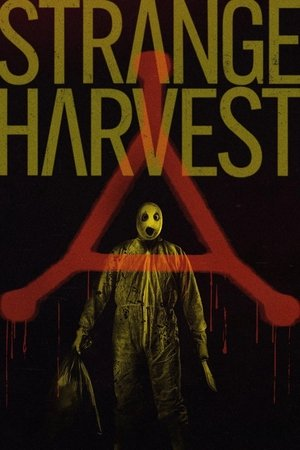
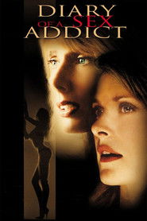
性瘾者日记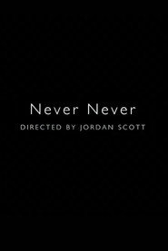
Never Never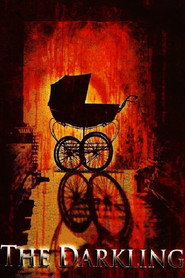
The Darkling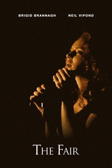
The Fair短评（轻微剧透）
它的恐怖几乎全部来自「形式的可信度」。奥尔蒂斯把纪录片那套语法抄得太像了：假新闻主播的语气、过时的字幕条、受访者那种略微僵硬的坐姿、Zoom 画面里不自然的停顿——你在前二十分钟里会被彻底骗住，等到第一个不对劲的细节出现时，你已经没有「这是电影」的防线了。这种手法比跳吓高明，因为它攻击的是你对影像的信任。《纽约时报》说结尾转向神秘学时「太疯了」，这个批评是成立的；但那也是它最诚实的地方——它从来没打算给你一个理性的解释。它的问题同样明确：中段有几段访谈确实是废话，节奏拖；表演水平参差；观众爆米花只有 63%，说明大部分人受不了这种慢。92% 的烂番茄和 39 万美元的票房摆在一起，就是它最好的注脚：这是给少数人拍的，但那少数人会记很久。
为什么值得一看
伪纪录 / 拾得影像（《女巫布莱尔》《墓地邂逅》《致命录像带》）爱好者；最近把真实犯罪纪录片刷腻、想被反将一军的人；想找一部今年没人聊但真的好的恐怖片的人。节奏慢、对白多，追求刺激场面的会睡着。内地无引进，Hulu 已上线。
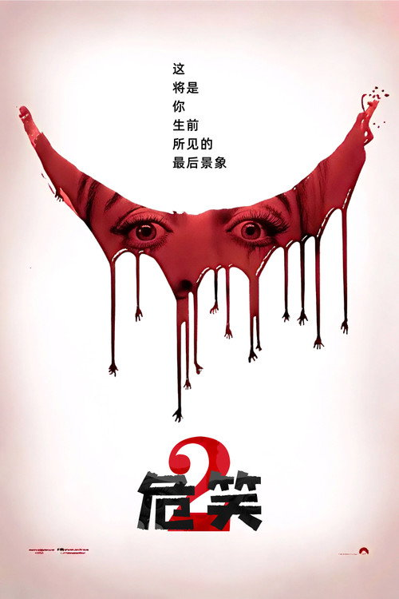
危笑2 Smile 2
一个微笑能传染——这次传给了一个有八百万粉丝的人。
剧情梗概
流行歌手斯凯·莱利正准备复出巡演，一年前的车祸、戒断与崩溃都被团队包装成了「浴火重生」的叙事。此时一个旧识找上门，带着那个诅咒，然后当着她的面自杀。从那一刻起，斯凯开始分不清台上台下、真假掌声，以及镜子里的自己到底是不是自己。而这个东西要的不是一个宿主——它要的是一场直播。
亮点
- 帕克·芬恩回归自编自导，2022 年的《危笑》是他的长片处女作，本片把同一个诅咒从一名治疗师搬到了一位流行巨星身上。
- 娜奥米·斯科特（《阿拉丁》的茉莉公主、《霹雳娇娃》）首次担纲恐怖片女主；凯尔·加尔纳回归饰第一部里的乔尔。
- 开场有一段约六分钟的长镜头，从图书馆书架一路推进到关键场景，是影片技术讨论度最高的段落。
- 宣传期派拉蒙把「微笑的人」放进了真实场景——棒球赛转播、直播间、街头大屏，把诅咒做成了线下活动。
- 预算 2800 万美元、全球票房 1.38 亿，是《危笑》系列目前最卖座的一部。
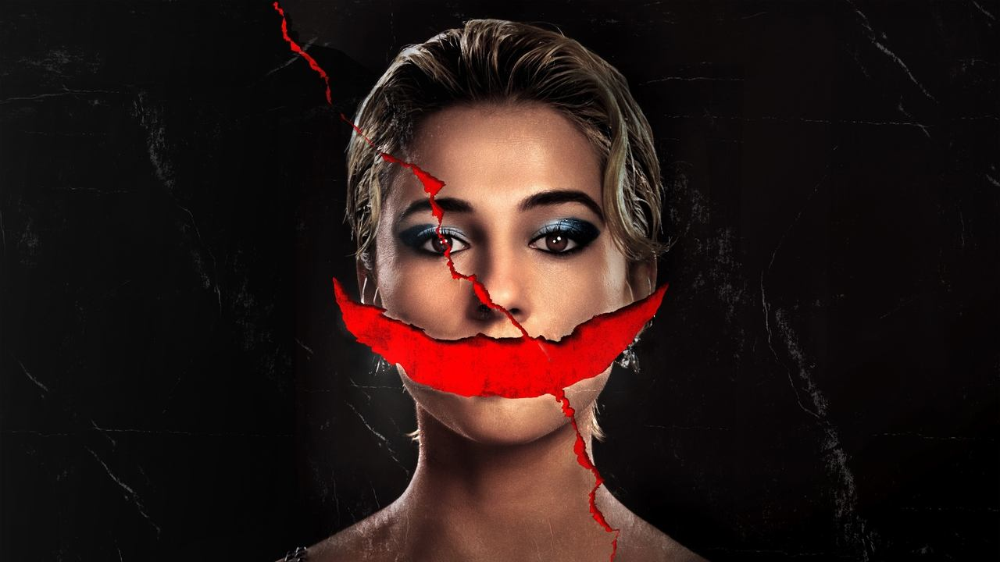
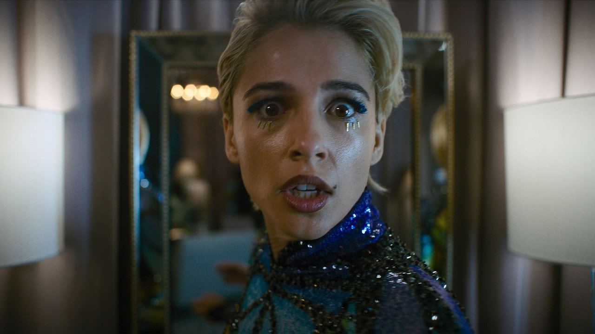
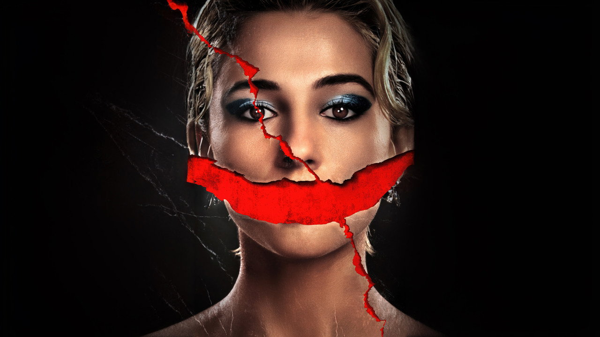
导演与主创 · 他们的历史作品

 Laura Hasn't Slept
Laura Hasn't Slept The Hidebehind
The Hidebehind Possession
Possession 超凡战队
超凡战队 火星救援
火星救援
 美国狙击手
美国狙击手 新猛鬼街
新猛鬼街 太平间闹鬼事件
太平间闹鬼事件短评（轻微剧透）
续集最容易做的是「换个人，再来一遍」，芬恩的做法是换一个「量级」——第一部里的诅咒在一间诊室里蔓延，这一部换成一个走到哪儿都有八千人在喊她名字的人。这个改动解决了续集最大的问题：它让「没人相信你」这件事有了新的形态。斯凯的崩溃发生在镜头、粉丝、经纪人、母亲的包围之中，于是恐怖不再是「没人听我说话」，而是「所有人都在听，但他们听到的不是我说的话」。娜奥米·斯科特撑住了这场戏，她把一个正在复出的流行歌手演成了一个正在被公开拆解的人；那段舞蹈排练的长镜头值得单独看一次。缺点也清楚：127 分钟偏长，中段重复了第一部的几个视觉套路，结尾的收束偏仓促，观众爆米花只有六成多。它比第一部更华丽，但未必更吓人。
为什么值得一看
《危笑》的影迷（这次的升级是有效的）；喜欢《它在身后》《仲夏夜惊魂》那种「诅咒即隐喻」的人；想看娜奥米·斯科特真正挑大梁的观众。含大量惊吓、自残与精神崩溃描写，情绪不稳定时慎看。内地未引进，Paramount+ / Prime Video 可看。
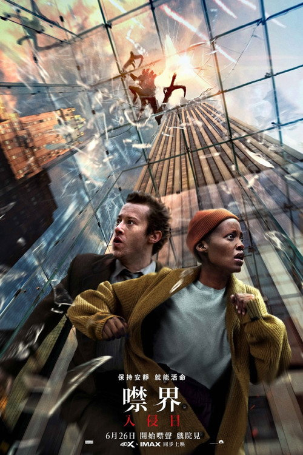
寂静之地：入侵日 A Quiet Place: Day One
不是「别出声」，是「出声也没人听得见了」。
剧情梗概
纽约。萨姆住在临终关怀院里，癌症晚期，已经不想再争取什么。她唯一还想去的是哈莱姆那家爵士酒吧——说动了护工陪她出门，然后那一天，天上的东西落了下来。全城在几分钟内变成猎场，规则很简单：听见你，你就没了。萨姆没有逃生的打算，她只想再吃一块派；而那个被她牵着走的英国青年埃里克，还活着，还想活下去。
亮点
- 迈克尔·萨诺斯基自编自导，他凭 2021 年尼古拉斯·凯奇主演的《救猪行动》成名；约翰·卡拉辛斯基转任制片并参与故事。
- 系列第一部「入侵第一天」的外传，时间线回到外星生物降临的当天，也是该系列第一次以城市为背景。
- 露皮塔·尼永奥（凭《为奴十二年》获奥斯卡最佳女配角）饰萨姆；约瑟夫·奎恩（剧《怪奇物语》第四季、《角斗士2》）饰埃里克。
- 杰曼·翰苏回归饰第一部里的「岛上男人」；那只叫弗罗多的猫由两只真猫轮流出演。
- 预算 6700 万美元、全球票房 2.62 亿，是 2024 年北美暑期档性价比最好的原创恐怖片之一。
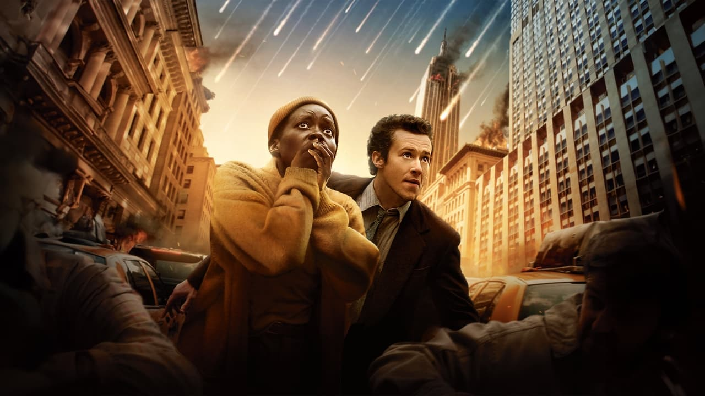
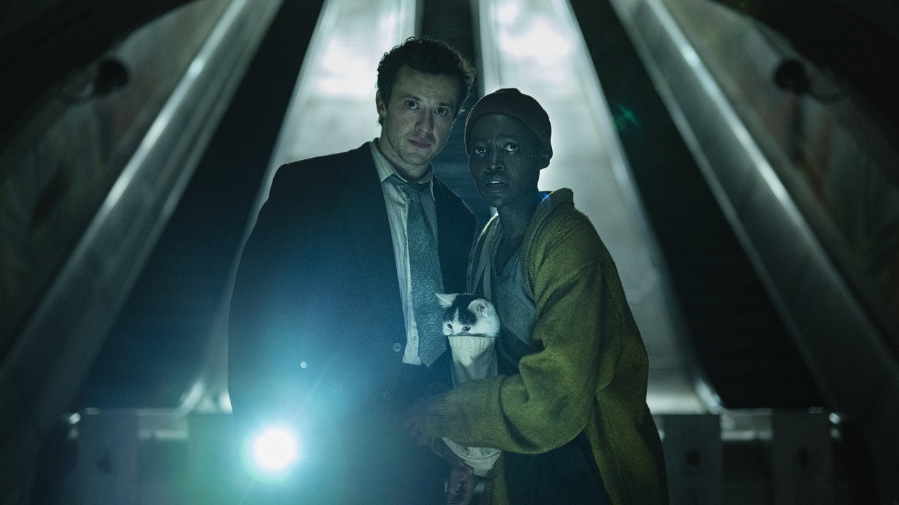
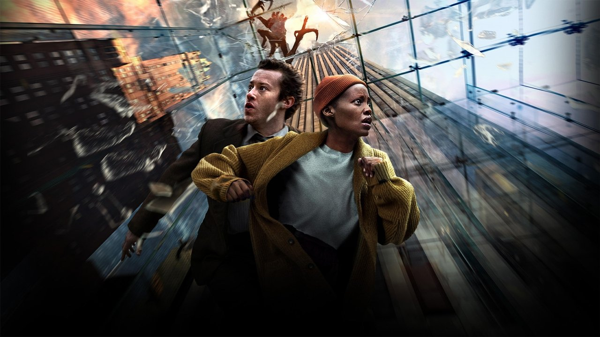
导演与主创 · 他们的历史作品
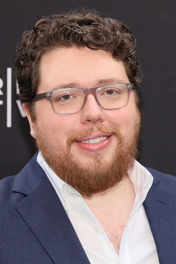
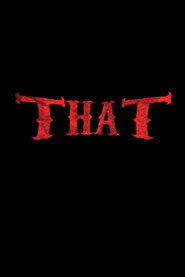
That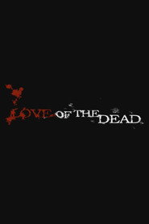
Love of the Dead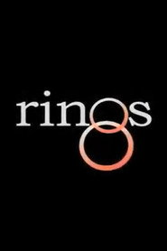
Rings 我们
我们 黑豹
黑豹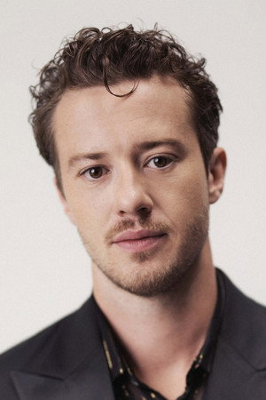
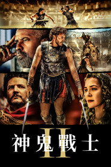
角斗士2短评（轻微剧透）
这一部最反直觉的选择是：把主角设成一个不想活的人。恐怖片通常需要角色「想要活下去」来驱动观众代入，萨诺斯基直接把这个引擎拆了——萨姆从第一分钟起就知道自己没几天了，于是全片的紧张感不再是「她会不会死」，而是「她愿意为这个陌生人走到哪一步」。这个设定让最后那场戏有了真正的重量，尼永奥的表演克制到几乎没有高潮戏，可你在结尾会突然意识到自己已经被她带过去了。技术上它保持了系列的强项：声音设计是全片真正的叙事者，城市的噪音被处理成一种持续的威胁。缺点也明确：因为它本质是「一天里的两个人」，中段有相当长的段落只是走过空城，节奏偏慢；IMDb 6.3 说明期待「寂静之地式惊吓」的普通观众并不买账。它是这个系列里最不像恐怖片、也最像电影的一部。
为什么值得一看
《寂静之地》系列的影迷（建议按 1 → 2 → 本片 的顺序看）；想在科幻恐怖里找一点情感而不是只找刺激的人；露皮塔·尼永奥的影迷。PG-13，惊吓段落集中但血腥度低。内地已于 2024 年 6 月 28 日公映，现主流平台可看。
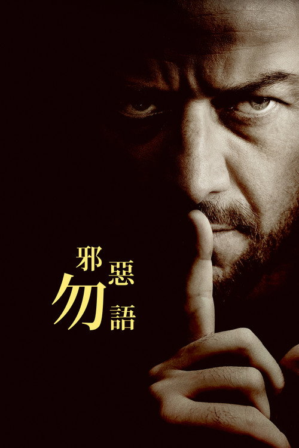
非礼勿言 Speak No Evil
他们只是不想显得没礼貌。
剧情梗概
一家四口在意大利度假时认识了一对英国夫妇：帕迪外向、热情、说话不留缝，妻子西拉安静得有点过分。回国后他们收到邀请，去那对夫妇位于乡下的农舍过周末。从进门开始，每一件事都越界一寸——言语上的、身体上的、对孩子的方式——而主人全程笑着。这对美国夫妇每一次想走，都会被自己的教养拦下来。直到他们发现，那份「不好意思」正是对方在利用的东西。
亮点
- 翻拍自 2022 年丹麦同名电影；由英国导演詹姆斯·沃特金斯（《伊甸湖》《黑衣女人》《巴黎危机》）自编自导。
- 詹姆斯·麦卡沃伊（《分裂》《X战警：第一战》《污垢》）饰帕迪，这个角色是他近几年最被讨论的一次表演。
- 麦肯兹·戴维斯（《银翼杀手2049》《终结者：黑暗命运》、剧《黑客军团》）饰妻子路易丝。
- 美版最大的改动在结尾：丹麦原版以冷静收场，这一版给了一整段反击戏——评论界对这一改动评价两极。
- 预算 1500 万美元、全球票房 7680 万，是布伦屋 2024 年少数影评与票房都过关的项目。
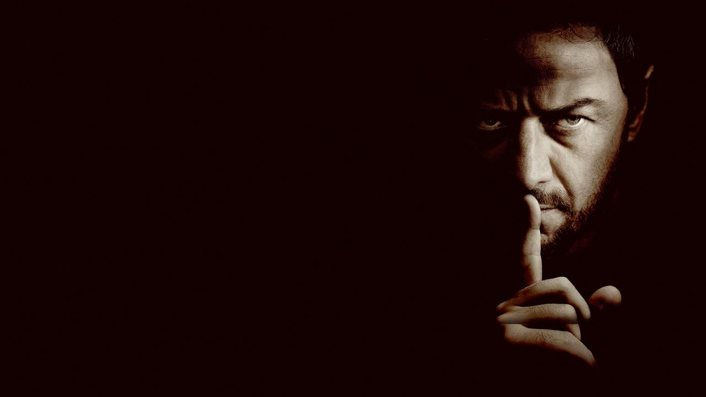
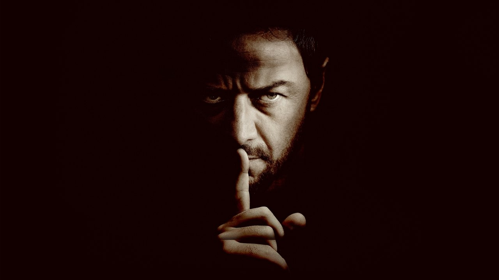
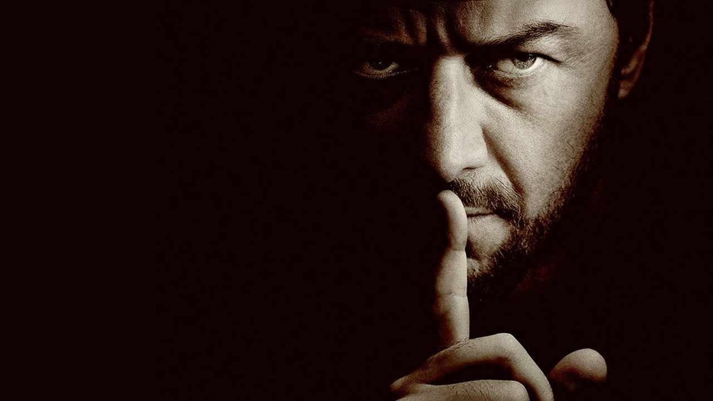
导演与主创 · 他们的历史作品
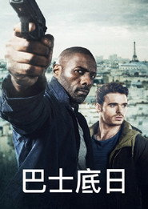
巴黎危机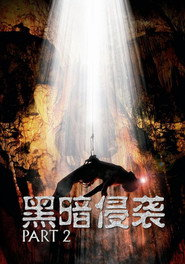
黑暗侵袭2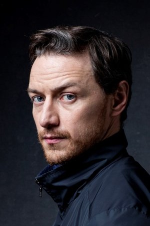
 分裂
分裂 X战警：天启
X战警：天启 X战警：第一战
X战警：第一战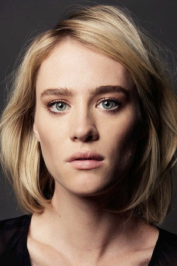
 银翼杀手2049火星救援
银翼杀手2049火星救援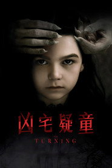
拧紧短评（轻微剧透）
这部片子的恐怖不来自任何超自然元素，而来自一个所有人都经历过的瞬间：别人做了过分的事，你因为怕尴尬而假装没事。沃特金斯把「礼貌」拍成了一种慢性毒药——帕迪每一次越界都是小幅度的，小到你可以解释成文化差异、酒后失言、热情过头，而每一次解释都在替他铺路。这就是为什么它在第二幕会让人坐立不安：你不是在等鬼，你是在等那对夫妇什么时候终于肯承认「这不对劲」。麦卡沃伊演得极好，他把帕迪处理成一个真心相信自己很热情的男人，而不是一个在演的恶棍，这个区别决定了整个角色的说服力。缺点也说清楚：第三幕确实转向了动作片，从心理惊悚滑向爽片，原版那种「冷到底」的狠劲被削掉了；看过丹麦原版的人多半会更喜欢原版的结尾。作为独立观看，它依然是 2024 年最有压迫感的惊悚片之一。
为什么值得一看
喜欢《伊甸湖》《趣味游戏》那一路「文明人的地狱」的人；詹姆斯·麦卡沃伊的影迷；想看一部没有鬼、但看完会反复回想自己是不是也这样过的人。含对儿童的危险描写与直接的暴力段落，心理承受力一般的谨慎。内地未引进，主流平台可租看。
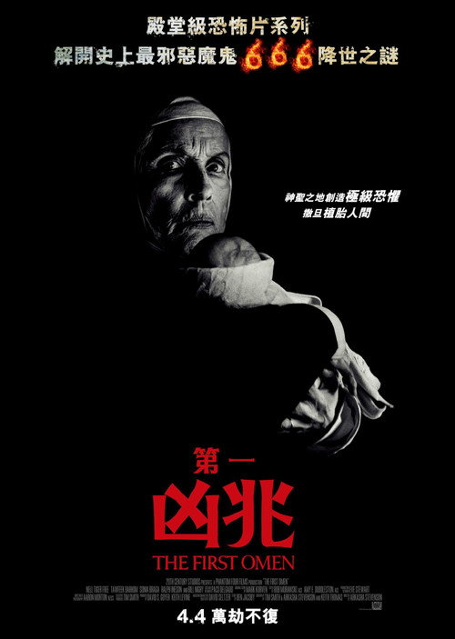
凶兆前传 The First Omen
1976 年那个孩子，是怎么来的。
剧情梗概
1971 年的罗马。美国修女玛格丽特抵达一座孤儿院，准备宣誓成为正式修女。院里死了一个年轻修女，死状被上层草草处理；一个叫卡莉塔的女孩被单独关着，所有人都躲着她。玛格丽特开始私下调查，越查越接近一个事实：教会里有一群人在等一个孩子出生，而他们已经等了很久。问题在于，他们准备让她成为那个容器。
亮点
- 1976 年《凶兆》的前传；阿卡莎·史蒂文森的长片处女作，此前主要拍短片与剧集。
- 妮尔·泰格尔·菲尔（《权力的游戏》中的弥赛拉、《移居者》）饰玛格丽特；拉尔夫·伊内森（《女巫》《头号玩家》）饰布伦南神父。
- 比尔·奈伊、查尔斯·丹斯、索妮亚·布拉加加盟，桑德拉·布拉加饰院长——这几位老戏骨撑起了影片的「教会质感」。
- 中段那场分娩戏长达数分钟且拍得极为直接，在上映时引发争议，部分地区要求删减。
- 2024 年 4 月 5 日北美公映，全球票房 5390 万美元，是近年口碑最好的「经典恐怖片前传」之一。
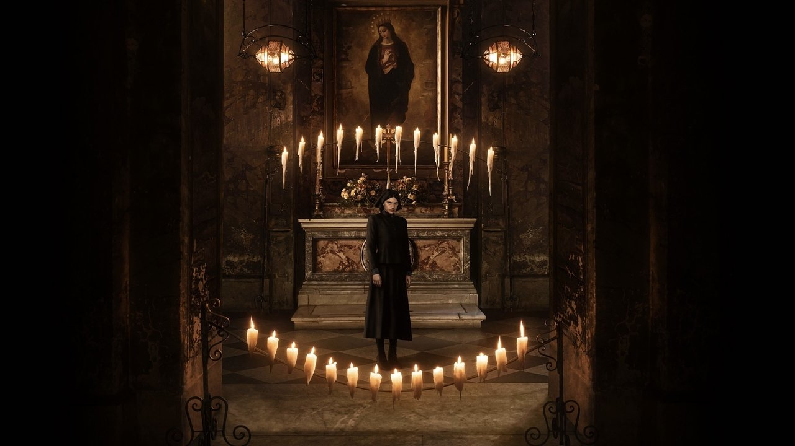
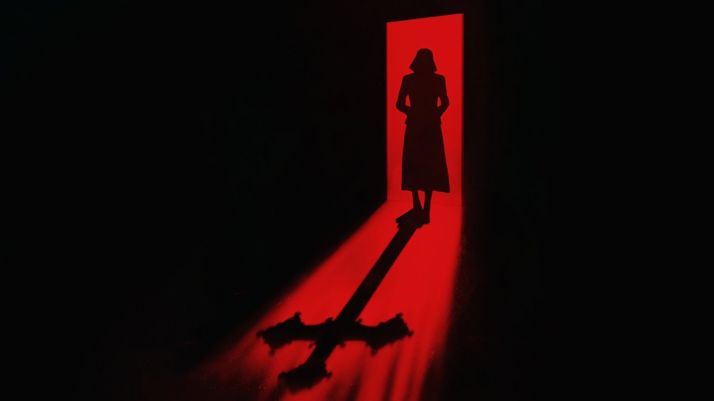
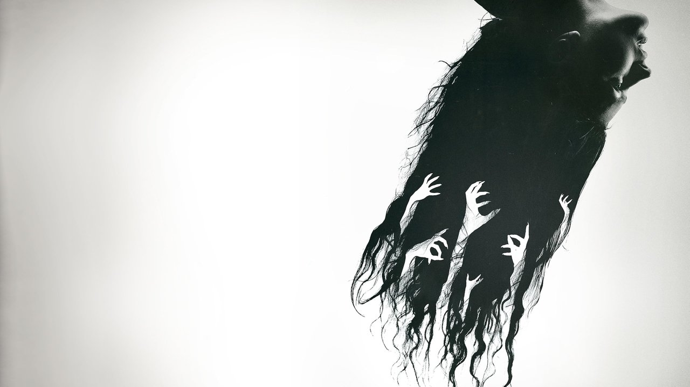
导演与主创 · 他们的历史作品
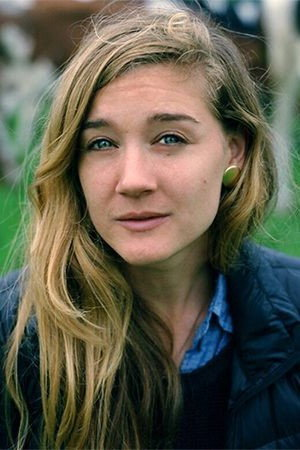
 女巫
女巫 王牌特工：特工学院
王牌特工：特工学院短评（轻微剧透）
前传通常是门亏本生意，因为它要回答一个没人问的问题。这一部成功的原因在于它换了视角：它不是在解释「那个反基督小孩是怎么来的」，而是在讲一个年轻女性如何被制度一点点剥夺对自己身体的决定权。这个主题让影片有了超出系列的当下性，也让它在宗教恐怖片的外壳下其实是一部关于控制权的电影。史蒂文森的视觉非常稳——70 年代罗马的土黄与暗红、修道院里那种永远斜射的光，都拍出了「老电影」的质感而不只是滤镜。妮尔·泰格尔·菲尔是全片的支柱，她的恐惧是渐进的、可信的。缺点明确：中段节奏拖沓，有几处解释性对白显得笨拙；那场分娩戏对很多观众来说是硬门槛，它被批评为「为了冒犯而冒犯」不是没有道理；IMDb 6.5 也说明普通观众没有影评人那么宽容。但如果你喜欢《罗斯玛丽的婴儿》《驱魔人》那一脉，它是近年最接近的一次。
为什么值得一看
《凶兆》《罗斯玛丽的婴儿》《驱魔人》那一脉宗教恐怖的爱好者；想看一部氛围扎实、不靠跳吓的老派恐怖片的人；对「身体自主权」主题有兴趣的观众。分娩与身体恐怖段落尺度大，敏感人群慎入。内地未引进，Disney+ / Hulu 已上线。
血爱成河 Love Lies Bleeding
她只是想让她变得更壮一点。事情后来不太受控。
剧情梗概
新墨西哥州一个没什么人的小镇。卢经营着一家快要倒闭的健身房，父亲是当地的军火商，姐姐嫁给了那个烂人。某天一个叫杰基的健美运动员路过，要去拉斯维加斯比赛，两人很快黏在一起。杰基想要更大，卢帮她找了药；杰基想要保护卢，于是做了件收不回来的事。从那之后，这条公路上所有人的关系都开始朝同一个方向加速。
亮点
- 罗斯·格拉斯（《圣人莫德》是她的长片处女作）自编自导，与 Weronika Tofilska 共同编剧，2024 年圣丹斯电影节首映。
- 克里斯汀·斯图尔特（《暮光之城》系列、《斯宾塞》）饰卢；凯蒂·M·奥布莱恩（《蚁人与黄蜂女：量子狂潮》《碟中谍8：最终清算》）饰杰基，这是她第一次担纲主角，试镜了六次。
- 配乐由 Clint Mansell（《梦之安魂曲》《黑天鹅》）操刀；埃德·哈里斯饰卢的父亲。
- 约翰·沃特斯把它列为自己 2024 年度第一，称它是「如果拉斯·梅耶是个酷儿知识分子又嗑类固醇，可能会拍出来的电影」。
- 影片后段有一处完全超现实的身体变形镜头，是格拉斯最被讨论的一次视觉处理。
导演与主创 · 他们的历史作品
 暮光之城
暮光之城 蚁人与黄蜂女：量子狂潮
蚁人与黄蜂女：量子狂潮短评（轻微剧透）
把它归到任何单一类型都是错的：它同时是爱情片、黑色电影、身体恐怖片和西部片，而且格拉斯很清楚自己在混搭，混搭本身就是它的语言。前两幕干净利落，欲望与暴力的关系被处理得非常坦率——杰基变强不是为了好看，是为了能动手，而这个动机又反过来腐蚀了她们的关系。克里斯汀·斯图尔特在这里演得比《暮光之城》之后的大多数角色都好，她的卢是一个把「不多想」当成生存策略的人；凯蒂·奥布莱恩的杰基则是全片的能量来源。问题出在最后二十分钟：格拉斯决定把影片推入完全的离奇，那个超现实的处理喜欢的人会视为神来之笔，不喜欢的人会觉得前面建立的东西全被推翻了。全球票房 1280 万美元、观众爆米花一般，说明它确实不是给所有人拍的。但它有股现在很少见的东西——一部真的敢下注的类型片。
为什么值得一看
《圣人莫德》的观众（格拉斯的作者性在这部里更外放）；喜欢《惊魂记》《穆赫兰道》那一路类型混搭的人；想看一部酷儿爱情片但不想要「治愈」结局的人。含大量暴力、类固醇与身体恐怖，R 级。内地未引进，Max / Prime Video 可看。
黑袋行动 Black Bag
他今晚要查出谁是内鬼。名单上有五个人，其中一个是他妻子。
剧情梗概
英国国家网络安全中心。代号「Severus」的绝密程序被泄露，会引发核事故，五名高级特工有嫌疑，其中之一是凯瑟琳——反情报官乔治的妻子。乔治有一周时间。他没有搜证，没有跟踪，而是请这五个人来家里吃一顿饭。整部片子就围绕着这顿饭、以及之后几次同样平静的对话展开。
亮点
- 史蒂文·索德伯格自导、自摄、自剪（沿用化名 Peter Andrews / Mary Ann Bernard），编剧是大卫·柯普（《侏罗纪公园》《碟中谍》）。
- 迈克尔·法斯宾德与凯特·布兰切特饰一对间谍夫妻；配角包括雷吉-让·佩吉、娜奥米·哈里斯、汤姆·伯克、玛丽莎·阿贝拉、皮尔斯·布鲁斯南。
- 全片 93 分钟，几乎没有动作场面，靠对话、走位与剪辑推进；开场那段俱乐部戏与结尾的测谎晚宴是两个技术高点。
- 2025 年 3 月 14 日北美公映，烂番茄 96%、Metacritic 85，是索德伯格近十年评价最高的作品之一。
- 但票房只有 4270 万美元（成本约 6000 万），索德伯格随后公开表示担忧「中等成本、面向成年人的电影正在消失」。
导演与主创 · 他们的历史作品

 饥饿游戏
饥饿游戏 十一罗汉
十一罗汉 十二罗汉
十二罗汉 十三罗汉
十三罗汉
 异形：契约
异形：契约 刺客信条X战警：天启X战警：第一战
刺客信条X战警：天启X战警：第一战
 本杰明·巴顿奇事
本杰明·巴顿奇事 雷神3：诸神黄昏
雷神3：诸神黄昏 驯龙高手2
驯龙高手2 夺宝奇兵4：水晶头骨王国
夺宝奇兵4：水晶头骨王国短评（轻微剧透）
它把间谍片里最贵的那部分全部删掉了：没有追车、没有枪战、没有跨国取景，只剩下几个人在房间里说话。而索德伯格证明了一件事——只要镜头放对位置、剪辑落对节拍，「谁在撒谎」这件事本身就足够撑满 93 分钟。真正的看点是乔治和凯瑟琳：他们是一对互相知道对方在说谎、并且把这件事当成婚姻一部分的夫妻。法斯宾德的表演是往内收的，他的每一次停顿都在计算；布兰切特则相反，她让凯瑟琳始终保持在「可能是也可能不是」的暧昧里，直到最后一场戏才落地。晚宴那一段是年度最好的群戏之一：六个人、一桌菜、几句玩笑，而你从头到尾不知道哪一句是刀。缺点很小但确实存在：它对「英国情报机构」的描写相当架空，不在意真实性的会喜欢，在意的人会觉得潦草；CinemaScore 只有 B，说明不少观众觉得它太冷、太淡。想要一部成年人拍给成年人看的类型片，它就是这个标准。
为什么值得一看
索德伯格的影迷（想看他最松弛、最自如的一次）；《锅匠，裁缝，士兵，间谍》那一路冷调谍战的观众；想看凯特·布兰切特与迈克尔·法斯宾德对戏的人。全片几乎没有动作戏，期待邦德式刺激的会失望。内地未引进，Prime Video / Peacock 已上线。
怪猴 The Monkey
上紧发条，然后会有人死。你不知道是谁，也不知道什么时候。
剧情梗概
双胞胎兄弟哈尔与比尔在父亲留下的旧物里翻出一只发条猴。上紧发条，它会敲鼓，然后附近就会有人以荒谬的方式死掉。兄弟俩把它扔进井里，各自长大、疏远。二十五年后，死法又开始出现，而这次轮到他们自己的孩子。
亮点
- 改编自斯蒂芬·金 1980 年的短篇《猴子》；奥斯古德·帕金斯自编自导，是他继《长腿怪》之后与 NEON 的第二次合作。
- 温子仁的 Atomic Monster 参与制片；提奥·詹姆斯一人分饰双胞胎哈尔与比尔，克里斯蒂安·康佛瑞饰少年时期。
- 塔蒂亚娜·马斯兰尼（凭剧《黑色孤儿》获艾美奖）饰母亲；伊利亚·伍德以一个令人意外的角色出场。
- 死法设计走的是《死神来了》的路子，但每一场都被处理成黑色喜剧——史蒂芬·金本人称这部改编「疯得可以」。
- 预算约 1000 万美元、全球票房 6890 万，是 2025 年 NEON 最赚钱的恐怖片之一。
导演与主创 · 他们的历史作品

 长腿
长腿 格蕾特和韩塞尔
格蕾特和韩塞尔 牧师之女
牧师之女 凶宅之花
凶宅之花 分歧者：异类觉醒
分歧者：异类觉醒 分歧者2：绝地反击
分歧者2：绝地反击短评（轻微剧透）
帕金斯在《长腿怪》里是往压抑里拍，这一部反过来了：他把死亡拍成了笑话，而且是那种越荒谬越好笑的笑话。这个转向是有风险的——你会觉得它在拿角色的死取乐——但它也确实提供了 2025 年最令人难忘的几场血浆戏，每一场都有完整的机械逻辑（先铺垫、再启动、最后落刀），看得人又想笑又不敢看。提奥·詹姆斯一人分饰两角，兄弟俩一个被恐惧定型、一个试图逃跑，他演出了两种「被童年毁掉」的不同形状。缺点也很清楚：调性在恐怖与喜剧之间反复横跳，第三幕明显泄气，Inverse 说它「tonally haphazard」（调性杂乱）是准确的；CinemaScore 只有 C+、观众 57%，说明它被当作恐怖片营销、买票进场的人并不都接受这是个喜剧。想清楚你要看的是哪一样，再决定要不要点开。
为什么值得一看
《长腿怪》的观众（想看帕金斯的另一面）；喜欢《死神来了》《砍人快乐》那种死亡设计的人；能接受「恐怖 + 无厘头」混搭的观众。血腥与残肢尺度大，笑点偏黑。内地未引进，Hulu / Prime Video 可看。
冲浪惊魂 The Surfer
「不住在这儿，就别在这儿冲浪。」
剧情梗概
一个男人带着儿子回到童年时冲浪的那片海滩，打算把海边那栋房子买回来。当地一群冲浪者不让他下水——理由简单粗暴：你不是本地人。他本可以走，但他把车停在停车场，决定留下等一个浪。第一天变成了很多天，太阳、羞辱、缺水和那句反复出现的口号，开始把他从体面的中产男人身上一点点剥下来。
亮点
- 爱尔兰导演洛肯·芬尼根（《生态箱》Vivarium、《反安慰剂》）执导，编剧托马斯·马丁；2024 年戛纳电影节「午夜展映」单元世界首映。
- 尼古拉斯·凯奇饰一个只被称作「冲浪者」的男人，影片几乎全程围绕他一个人展开。
- 朱利安·麦克马洪饰冲浪帮头目斯卡利——这是他 2025 年 7 月去世前最后完成并上映的表演。
- 故事灵感来自加州真实存在的冲浪地盘帮派 Lunada Bay Boys；全片在西澳大利亚的雅林加普拍摄。
- 烂番茄 84%（174 条影评）但观众爆米花只有 46%，是 2025 年影评人与普通观众落差最大的影片之一。
导演与主创 · 他们的历史作品

 疯狂原始人
疯狂原始人 国家宝藏
国家宝藏 恶灵骑士
恶灵骑士 神秘代码
神秘代码短评（轻微剧透）
这是一部关于「一个体面的人如何被慢慢剥夺体面」的电影，而且它不打算让你舒服。芬尼根的处理方式是把海滩拍成一个竞技场：光永远过曝，颜色永远饱和到发痛，海浪声永远比人声大——你和他一样处在一种无法思考的生理状态里。凯奇的表演是近年他最好的几次之一，他没有一开始就疯，而是让你看着他一点一点地接受那些荒谬的规则，直到「再等一天」变成了唯一的逻辑。这片海滩上发生的事其实可以概括成一句话：一群人决定你不属于这里，然后你就真的不再属于任何地方了。它同时是身份、阶级与男性自尊的寓言，虽然并不算深刻。缺点必须说清楚：它确实重复，中段有很长一段时间只是在看他受苦；观众 46% 说明的是「大多数人不想花 100 分钟看一个男人被羞辱」。《卫报》称它是「一部光荣疯癫的 B 级惊悚片」——这句话就是它最准确的说明书。
为什么值得一看
尼古拉斯·凯奇的影迷（尤其是《猪》《不能承受的天才之重》之后的那一脉）；《生态箱》那种「被困在概念里」的设定的爱好者；想看一部酷暑、强光、慢慢失控的心理惊悚的人。全程压抑、无解压出口，观众口碑两极，别带着放松的心情点开。内地无引进，Hulu / Disney+ 已上线。